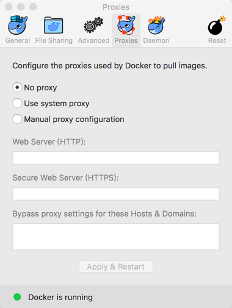

安装docker
1，Boot2Docker（官方已废弃）
Docker引擎使用了Linux内核特定的特性，所以要让它运行在OS X上我们需要用一个轻量型的虚拟机\(vm\)。用OS X的Docker客户端来控制虚拟Docker来构建，运行以及管理Docker容器。为了使过程更简单一点，设计了一个叫做[Boot2Docker](https://github.com/boot2docker/boot2docker)的帮助应用程序，它能按照虚拟机以及运行Docker后台程序。
$boot2docker init
$ boot2docker start
$ export DOCKER\_HOST=tcp://$\(boot2docker ip 2>/dev/null\):2375
完成虚拟化环境搭建。
$ docker run ubuntu echo hello world
下载ubuntu镜像并打印hello world。
2，docker-for-mac
下载地址：https://docs.docker.com/docker-for-mac/
如果安装失败：
$ docker ps
-bash: docker: command not found
$ docker run -d -p 80:80
-bash: docker: command not found
如果安装成功：
$ docker info
Containers: 0
Running: 0
Paused: 0
Stopped: 0
Images: 0
Server Version: 17.03.1-ce
Storage Driver: overlay2
Backing Filesystem: extfs
Supports d_type: true
Native Overlay Diff: true
Logging Driver: json-file
Cgroup Driver: cgroupfs
Plugins:
Volume: local
Network: bridge host ipvlan macvlan null overlay
Swarm: inactive
Runtimes: runc
Default Runtime: runc
Init Binary: docker-init
containerd version: 4ab9917febca54791c5f071a9d1f404867857fcc
runc version: 54296cf40ad8143b62dbcaa1d90e520a2136ddfe
init version: N/A (expected: 949e6facb77383876aeff8a6944dde66b3089574)
Security Options:
seccomp
Profile: default
Kernel Version: 4.9.13-moby
Operating System: Alpine Linux v3.5
OSType: linux
Architecture: x86_64
CPUs: 2
Total Memory: 1.952 GiB
Name: moby
ID: MTBS:V3B2:D4PM:4G3G:RRI6:HFDV:PJ73:A6DP:7KYA:A2G7:AHG6:K4JX
Docker Root Dir: /var/lib/docker
Debug Mode (client): false
Debug Mode (server): true
File Descriptors: 16
Goroutines: 26
System Time: 2017-04-28T08:28:21.556923057Z
EventsListeners: 1
Http Proxy: 127.0.0.1:8888
Https Proxy: 127.0.0.1:8888
Registry: https://index.docker.io/v1/
Experimental: true
Insecure Registries:
127.0.0.0/8
Live Restore Enabled: false
$ docker images
REPOSITORY TAG IMAGE ID CREATED SIZE
$ docker ps
CONTAINER ID IMAGE COMMAND CREATED STATUS PORTS NAMES
$ docker run hello-world
Unable to find image 'hello-world:latest' locally
docker: Error response from daemon: Get https://registry-1.docker.io/v2/: http: error connecting to proxy http://127.0.0.1:8888: dial tcp 127.0.0.1:8888: getsockopt: connection refused.
See 'docker run --help'.
发现失败，重试仍然失败
$ docker run tag
Unable to find image 'tag:latest' locally
docker: Error response from daemon: Get https://registry-1.docker.io/v2/: http: error connecting to proxy http://127.0.0.1:8888: dial tcp 127.0.0.1:8888: getsockopt: connection refused.
See 'docker run --help'.
$ docker run -d -p 80:80 --name webserver nginx
Unable to find image 'nginx:latest' locally
docker: Error response from daemon: Get https://registry-1.docker.io/v2/: http: error connecting to proxy http://127.0.0.1:8888: dial tcp 127.0.0.1:8888: getsockopt: connection refused.
See 'docker run --help'.
$ docker run -d -p 80:80 --name webserver nginx
docker: Cannot connect to the Docker daemon at unix:///var/run/docker.sock. Is the docker daemon running?.
See 'docker run --help'.
$ docker ps
Cannot connect to the Docker daemon at unix:///var/run/docker.sock. Is the docker daemon running?
$ docker run docker/whalesay cowsay boo
Unable to find image 'docker/whalesay:latest' locally
docker: Error response from daemon: Get https://registry-1.docker.io/v2/: http: error connecting to proxy http://127.0.0.1:8888: dial tcp 127.0.0.1:8888: getsockopt: connection refused.
See 'docker run --help'.
代理有问题：打开docker/prefrence
